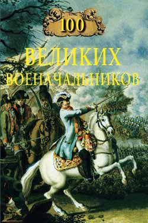

Великие военачальники

Хельмут фон Мольтке.
История человеческой цивилизации знает немало поистине великих личностей, чьи деяния в известной мере изменяли облик современной им эпохи, перекраивали политическую карту мира. К их числу относятся и великие государственники — военные вожди или полководцы. Именно войны на протяжении многих тысячелетий определяли судьбу не только отдельно взятых народов и государств, но и целых исторических эпох.
Летопись мировых событий полна больших войн, которые зачастую охватывали не только целые континенты, но и всю нашу планету. Малые войны и военные конфликты просто не поддаются какому-либо учёту, особенно в Древнем мире. В военных пожарищах гибли сотни больших и малых государств, в жертву на алтарь бога войны приносились сотни миллионов человеческих жизней. Такие величайшие завоеватели в истории мировой цивилизации, как Чингисхан и Александр Македонский, покорившие в своё время полмира, по сей день поражают содеянным человеческое воображение.
История убедительно свидетельствует о том, что только те народы или государства, которые сумели выдвинуть из своей среды в годину тяжёлых, поистине судьбоносных испытаний действительно великих полководцев, военных гениев, смогли выжить и отстоять свою независимость. Такие народы и государства были в состоянии не только защитить себя и своё право на будущее вооружённой рукой, но и продиктовать собственную волю победителя другим народам и странам.
Полководцы творили не только военную историю человеческой цивилизации, но и определяли её лицо в годы войн. Их деяния на поле брани, в сражениях на суше и на море, в военных походах стали неотъемлемой частью исторической памяти человечества. Образ великого полководца многолик — это и прославленный защитник Отечества, и завоеватель, проливший море человеческой крови, и тиран для собственного народа и для народа покорённой страны, и надёжный правитель государства, и человек, который приводил страну к победе в вооружённом противостоянии с врагом, военный реформатор и военный теоретик.
В этой книге описаны биографии ста действительно великих полководцев истории человечества, которые представляют различные эпохи, государства и народы. При выборе персоналий автор исходил прежде всего из основополагающих, неоспоримых в биографии каждого из них фактов — одержанных в войнах побед и из того, насколько одержанные победы определяли исход военных конфликтов.
В этой оценке, конечно же, учитывались как полководческий и организаторский талант, так и личный вклад в развитие военного искусства, опыт ведения войн. Учитывалось и состояние исторической памяти о человеке, облечённом огромной властью военного времени и блиставшем ратной славой при жизни.
Непреложным критерием оценки величия каждой полководческой личности было то обстоятельство, насколько слава этих военных вождей выдержала проверку временем. Или, говоря другими словами, насколько дела военного вождя пережили свою эпоху. Безусловно, просто невозможно сравнивать дарование и дела полководцев, которые творили войну в разные эпохи, на разных континентах, обладая при этом несопоставимыми военными силами.
Объективно невозможно сравнивать полководческое величие Наполеона и Жукова, Цезаря и Суворова, Ганнибала и Тимура, Аврелиана и Вашингтона. Они жили и творили на войне в совершенно разные эпохи и в разных условиях.
Французский император Наполеон Бонапарт писал: «Не римские легионы покорили галлов, но Цезарь. Не карфагенское войско, но Ганнибал нагнал страх на римлян. Македонская фаланга не дошла бы до Индии, если бы не Александр. Только Туренн мог довести французов до Везера и Инна. Прусское войско не смогло бы семь лет оборонять Пруссию от трех самых могущественных держав Европы, если бы не Фридрих Великий». В этом изречении кроется историческая правда.
Естественно, что самое большое число великих полководцев дали для истории поистине военные потрясения вселенной — Первая и Вторая мировые войны, европейские войны с участием наполеоновской Франции, войны в Древней Греции и Древнем Риме, европейские коалиционные военные пожары. Именно в них разворачивались те действительно грандиозные события, которые являлись поворотными для судеб многих народов и государств.
Бесспорно, количество великих полководцев мировой военной истории превосходит строго заданное серией число биографий. Однако автор как профессиональный военный историк при отборе героев своей книги исходил из собственных критериев, о которых сказано выше. Чтобы избежать субъективных оценок величия того или иного полководца, их биографии расположены в хронологическом порядке исторических событий.
"100 великих военачальников".
Кир ii Великий (куруш) ? — 530 до н.э..
Дарий i, Дараявауш ? — 486 до н.э..
Агесилай ii ок. 442 — ок. 358 до н.э..
Александр Великий, известен также как Александр Македонский 356-323 до н.э..
Селевк i Никатор ок. 358-281 или 280 до н.э..
Ганнибал, Аннибал Барка 247 или 246-183 до н.э..
Сулла Луций Корнелий 138-78 годы до н.э..
Митридат vi Евпатор 132-63 до н.э..
Цезарь Гай Юлий 102 или 100-44 до н.э..
Аврелиан Луций Ломиций 214 или 215-275.
Карл Великий (или Шарлемань) 742-814.
Святослав Игоревич ок. 942-972.
Вильгельм i Завоеватель ок. 1027-1087.
Фридрих i Барбаросса (Краснобородый) ? — 1190.
Саладин, Салах-ад-дин (Салах-ад-дин юсуф ибн аюб) 1138-1193.
Чингисхан (Тэмуджин, Темучин) ок. 1155-1227.
Батый, Бату, Саин-хан 1208-1256.
Александр Невский 1220 или 1221-1263.
Даниил Галицкий (Даниил Романович Галицкий) 1201-1264.
Чан Хынг Дао (Чан Куок Туан) 1226-1300.
Тимур, Тамерлан, Тимурленг (Тимур-хромец) 1336-1405.
Баязид i Йылдырим 1354 (1360) — 1404.
Кортес Эрнан Фернандо 1485-1547.
Писарро Франсиско ок. 1475-1541.
Сулейман i Великолепный 1494-1566.
Мориц Оранский (Нассауский) 1567-1625.
Тилли Иоганн Церклас фон 1559-1632.
Монтекукули (Монтеккуколи) Раймунд 1609-1680.
Конде Луи ii Бурбон (Великий Конде) 1621-1686.
Мальборо Джон Черчилл 1650-1722.
Пётр i Великий (Пётр i Алексеевич Романов) 1672-1725.
Меншиков Александр Данилович 1673 (или 1670) — 1729.
Мориц Саксонский (Герман Мориц граф Саксонский) 1696-1750.
Салтыков Пётр Семёнович 1698-1773.
Румянцев-Задунайский Пётр Александрович 1725-1796.
Суворов Александр Васильевич 1730-1800.
Ушаков Федор Фёдорович 1745-1817.
Гудович Иван Васильевич 1741-1820.
Кутузов (Голенищев-Кутузов) Михаил Илларионович 1745-1813.
Багратион Пётр Иванович 1765-1812.
Барклай-де-Толли Михаил Богданович 1761-1818.
Наполеон i Бонапарт 1769-1821.
Веллингтон Артур Уэлсли 1769-1852.
Ермолов Алексей Петрович 1777-1861.
Паскевич Иван Фёдорович 1782-1856.
Дибич-Забалканский Иван Иванович (Иоганн Карл Фридрих Антон) 1785-1831.
Радецкий фон Радец Йозеф 1766-1858.
Грант Улисс Симпсон 1822-1885.
Мольтке (старший) Хельмут Карл фон 1800-1891.
Гарибальди Джузеппе 1807-1882.
Скобелев Михаил Дмитриевич 1843-1882.
Гинденбург Пауль фон 1847-1934.
Алленби Эдмунд Генри Хинмен 1861-1936.
Брусилов Алексей Алексеевич 1853-1926.
Алексеев Михаил Васильевич 1857-1918.
Деникин Антон Иванович 1872-1947.
Фрунзе Михаил Васильевич 1885-1925.
Ататюрк. Мустафа Кемаль-Паша 1881-1938.
Чан Кайши (Цзян Цзеши) 1887-1975.
Маннергейм Карл Густав Эмиль фон 1867-1951.
Гудериан Хайнц Вильгельм 1888-1954.
Монтгомери Аламейнский Бернард Лоу 1887-1976.
Эйзенхауэр Дуайт Дэвид 1890-1969.
Брэдли Омар Нельсон 1893-1981.
Жуков Георгий Константинович 1896-1974.
Рокоссовский Константин Константинович 1896-1968.
Конев Иван Степанович 1897-1973.
Малиновский Родион Яковлевич 1898-1967.